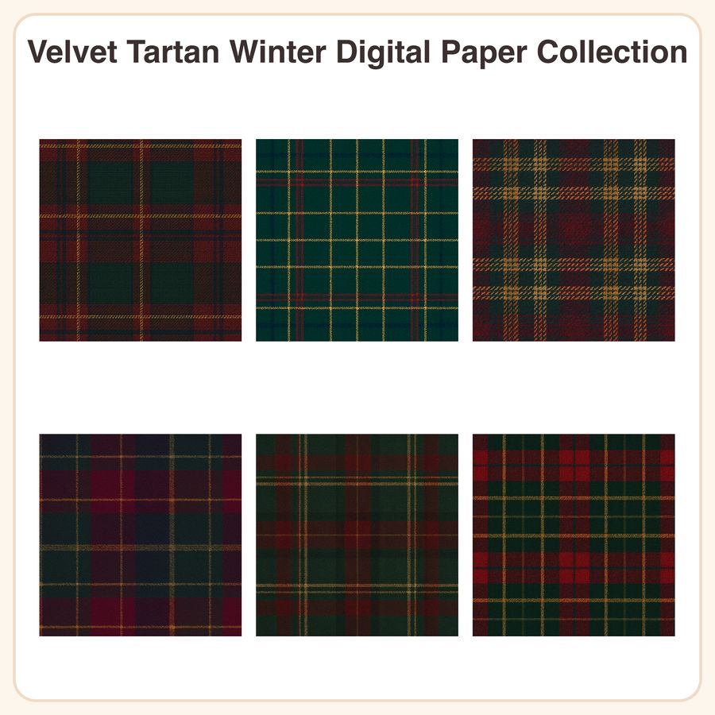

$4.50
View on EtsyCozy up your holiday projects with rich, woven tartan patterns inspired by heritage plaid textiles ✦ Six deep jewel-toned designs in forest green, burgundy, gold, and navy — perfect for cabin-style decor, scrapbooking, and planner spreads. What's included: • 6 seamless tartan patterns, each in two formats • 6 high-res JPEGs, 3072x3072px (12x12in @ 256dpi), ready to print • 6 repeatable PNG tiles for seamless digital use in your own designs • Patterns included: Forest green & burgundy tartan weave, Navy & gold windowpane plaid, Burgundy & gold crossweave tartan, Deep plum & pine tartan weave, Forest green & navy plaid with gold accent lines, Burgundy & navy tartan with fine crosshatch texture How to use: • Print at home or through a print shop for cardstock, planner inserts, or gift wrap • Import PNG tiles into design software for seamless backgrounds, digital planners, or fabric-look mockups • Great for holiday cards, junk journals, scrapbook backgrounds, and cabin-themed decor File formats & sizes: • JPEG: 3072x3072px (12x12in) • PNG: seamless repeatable tile, transparent-free background • Delivered as a zipped folder, instant digital download License: • Personal and small business commercial use permitted (up to 500 finished units sold) • No reselling, sharing, or redistributing the digital files themselves • Credit appreciated but not required Honest disclosure: These patterns were designed by our shop with the help of AI tools, then reviewed and refined for print-ready quality. No physical fabric or hand-lettering was used in their creation.